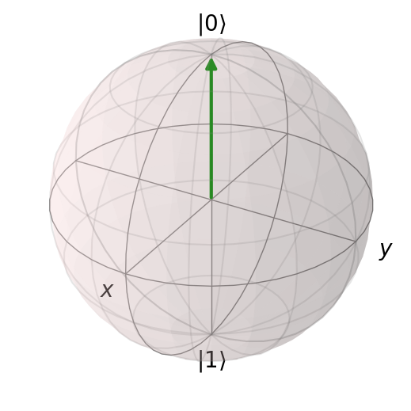
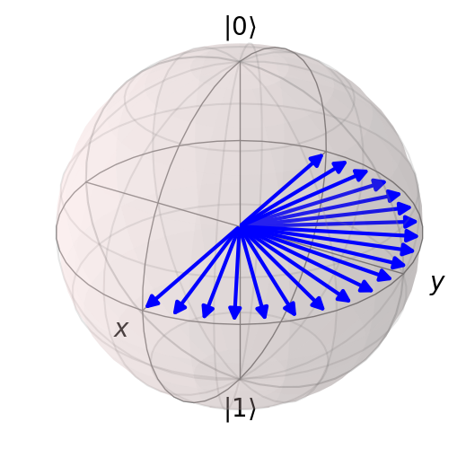
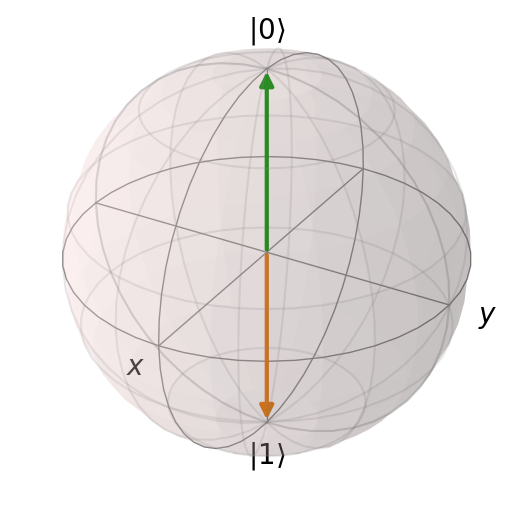
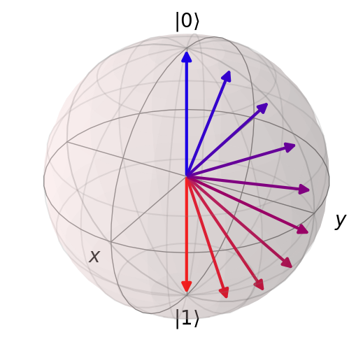
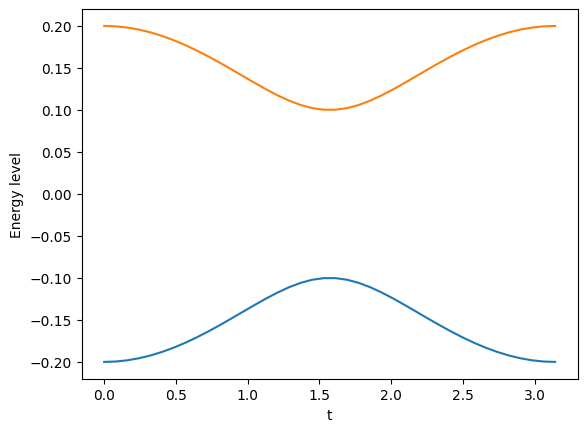
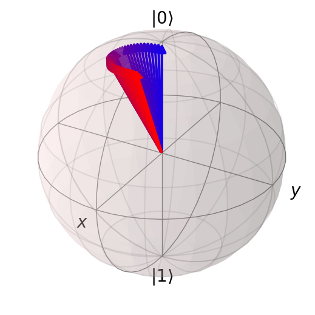

00: Introduction to QuTiP
Contents
00: Introduction to QuTiP#
Tasks#
-
Open Jupyter
Run the smoke test notebook
-
Imports
-
Creating and examining quantum states
Arithmetic with states
What is a Qobj?
-
Plotting 2-level states on the Bloch sphere
Plotting many states at once
Changing the colors
Changing the transparency
-
Creating and examining quantum operators
Calculating expectation values
Making projectors
-
Eigenvalues
Eigenstates
-
Creating density matrices
Plotting 2-level density matrices on the Bloch sphere
Plot some pure states
Plot some mixed states
-
Create a time-dependent operator
What is a QobjEvo?
Adding arguments
Tensor products and partial traces
Construct a state with two or three qubits
Construct an operator on multiple qubits
Construct an entangled state
Take the partial trace of a product state
Take the partial trace of an entangled state
-
Building Hamiltonians
Determining eigenvalues and eigenstates
Plotting eigenvalues
Solving the Schrödinger Equation using sesolve
Plotting the states
Plotting the states on the Bloch sphere
Plotting expectation values
Using functions to make your notebooks neater
Write a function for displaying the eigenstates of an operator
Write a function for displaying states on the Bloch sphere
Pre-flight check#
If you haven’t installed Python, QuTiP, Jupyter and the other requirements yet, do so now by following one of the sets of instructions.
You can test that your setup is working by running the smoke test notebook.
Imports#
%matplotlib inline
import matplotlib.pyplot as plt
import qutip
import numpy as np
Helper functions#
def display_list(a, title=None):
""" Display a list of items using Jupyter's display function. """
if title:
print(title)
print("=" * len(title))
for item in a:
display(item)
def print_attrs(obj, name, attrs):
""" Print the listed attributes of an object. """
for attr in attrs:
print(f"{name}.{attr}: {getattr(obj, attr)}")
def show_bloch(states, vector_color=None, vector_alpha=None):
""" Show states or density matrices on the Bloch sphere. """
bloch = qutip.Bloch()
bloch.add_states(states)
if vector_color is not None:
if vector_color == "rb":
vector_color = [
(c, 0, 1 - c) for c in np.linspace(0.1, 1.0, len(states))
]
bloch.vector_color = vector_color
if vector_alpha is not None:
bloch.vector_alpha = vector_alpha
bloch.show()
def display_eigenstates(op):
""" Display the eigenvalues and eigenstates of an operator. """
evals, evecs = op.eigenstates()
print("Eigenvalues:", evals)
print()
print("Eigenstates")
print("===========")
for v in evecs:
display(v)
States#
Creating and examining quantum states
Arithmetic with states
What is a Qobj?
# a qubit in the |0> state
ket = qutip.ket("0")
# show some of the properties relevant to kets
display(ket)
print_attrs(ket, "ket", ["type", "dims", "shape", "isket", "isbra"])
ket.type: ket
ket.dims: [[2], [1]]
ket.shape: (2, 1)
ket.isket: True
ket.isbra: False
# show the adjoint of the ket -- a bra
ket.dag()
# construct the bra directly
bra = qutip.bra("0")
# a qubit in the |1> state
qutip.ket("1")
# construct |0> and |1> using qutip.basis
q0 = qutip.basis(2, 0)
q1 = qutip.basis(2, 1)
display_list([q0, q1])
# show that Qobj's with the same values are equal
q0 == q0
True
# show that Qobj's with different global phases are not equal
display(q0 * 1j)
print("Equal:", q0 == q0 * 1j)
print("Overlap:", q0.overlap(q0 * 1j))
print("Overlap is 1:", np.abs(q0.overlap(q0 * 1j)) == 1.0)
Equal: False
Overlap: 1j
Overlap is 1: True
# orthogonal vectors have 0 overlap
q0.overlap(q1)
0j
# for states, the overlap is the inner product
print("q0 · q1:", (q0.dag() * q1).full()[0, 0])
print("q0 · q1:", (q1.dag() * q0).full()[0, 0])
print("(1j * q0) · q0:", ((1j * q0).dag() * q0).full()[0, 0])
q0 · q1: 0j
q0 · q1: 0j
(1j * q0) · q0: -1j
# adding states
q0 + q1
# calculating the norm
(q0 + q1).norm()
1.4142135623730951
# manually normalizing a state to unit length
(q0 + q1) / (q0 + q1).norm()
# using .unit() to normalize the length of a state
(q0 + q1).unit()
Bloch sphere#
Plotting 2-level states on the Bloch sphere
Plotting many states at once
Changing the colors
Changing the transparency
# show a single state
show_bloch(q0)

# show both basis states
show_bloch([q0, q1])

# show many states
theta = np.linspace(0, np.pi, 20)
states = [q0 + np.exp(1j * th) * q1 for th in theta]
states = [s.unit() for s in states]
show_bloch(states)

# How to remove the colours:
show_bloch(
states,
vector_color=[(0, 0, 1.0)] * len(states),
)

# Use transparency to show where states are in the list
show_bloch(
states,
vector_color=[(0, 0, 1.0)] * len(states),
vector_alpha=np.linspace(0.1, 1.0, len(states)),
)

# Use color map to show where states are in the list
show_bloch(
states,
vector_color=[(c, 0, 1 - c) for c in np.linspace(0.1, 1.0, len(states))],
)

Operators#
Creating and examining quantum operators
Calculating expectation values
Making projectors
# the Pauli X operator
sx = qutip.sigmax()
# show some of the properties relevant to operators
display(sx)
print_attrs(sx, "sx", ["type", "isoper", "dims", "shape", "isherm"])
sx.type: oper
sx.isoper: True
sx.dims: [[2], [2]]
sx.shape: (2, 2)
sx.isherm: True
# show the adjoint
sx.dag()
# show the diagonal entries
sx.diag()
array([0., 0.])
# show the trace
sx.tr()
0.0
# show the (trace) norm
sx.norm()
2.0
# apply sx to the basis states -- it swaps them
display_list([sx * q0, sx * q1])
# construct the other Pauli matrices and the identity matrix
sy = qutip.sigmay()
sz = qutip.sigmaz()
I = qutip.qeye(2)
display_list([I, sx, sy, sz])
# Hadamard gate
H = qutip.qip.operations.hadamard_transform()
H
# Making projectors
q0.proj()
q0 * q0.dag()
Eigenvalues and eigenstates#
Eigenvalues
Eigenstates
display_eigenstates(sz)
Eigenvalues: [-1. 1.]
Eigenstates
===========
display_eigenstates(sx)
Eigenvalues: [-1. 1.]
Eigenstates
===========
display_eigenstates(sy)
Eigenvalues: [-1. 1.]
Eigenstates
===========
Density matrices#
Creating density matrices
Plotting 2-level density matrices on the Bloch sphere
Plot some pure states
Plot some mixed states
rho0 = qutip.ket2dm(q0)
rho0
qutip.ket2dm(q0 * np.exp(0.1j))
q0 * q0.dag() # global phases cancel
rho = q0 * q0.dag() + q1 * q1.dag()
rho
rho.norm()
2.0
rho = rho.unit()
rho
bloch = qutip.Bloch()
bloch.add_states([qutip.ket2dm(q0), qutip.ket2dm(q1)])
bloch.add_states([rho])
bloch.show()

# p = 0.5 * (I + n . (sx, sy, sz))
# if p == 0.5 I, then n = (0, 0, 0)
rho == 0.5 * qutip.qeye(2)
True
basis = [qutip.qeye(2), sx, sy, sz]
for v in basis:
display(v)
for v in basis:
assert (v * v).tr() == 2.0
for v in basis:
for w in basis:
if v != w:
assert (v * w).tr() == 0.0
Time-dependent operators#
Create a time-dependent operator
What is a QobjEvo?
Adding arguments
# Create a simple quantum object that represents sx * t
sigmax_t = qutip.QobjEvo([[sx, "t"]])
display(sigmax_t)
display_list([
sigmax_t(t) for t in [0.0, 0.25, 0.5, 1.0]
])
<qutip.qobjevo.QobjEvo at 0x7f28bc3d74c0>
# Multiplication:
display_list([
(0.1 * sigmax_t)(1.0),
(0.5 * sigmax_t)(1.0),
])
# Addition:
sigmay_t = qutip.QobjEvo([[sy, "t"]])
display_list([
(sigmax_t * sigmay_t)(1.0),
])
# Take the conjugate and the adjoint:
display_list([
sigmay_t.conj()(0.5),
sigmay_t.dag()(0.5),
])
# Plotting the evolution under sigmax_t
states = [(1j * sigmax_t(t)).expm() * q0 for t in np.linspace(0, np.pi / 2, 10)]
show_bloch(states, vector_color="rb")

# Including a constant term
sz_plus_sy_t = qutip.QobjEvo([sz, [sy, "t"]])
display_list([
sz_plus_sy_t(0.1),
sz_plus_sy_t(1.0),
])
# Using a function like sin()
sz_sin_t = qutip.QobjEvo([[sz, "sin(t)"]])
display_list([
sz_sin_t(t) for t in np.linspace(0, np.pi / 2, 4)
])
# Supplying arguments other than time
sz_g_sin_t = qutip.QobjEvo([[sz, "g * sin(t)"]], args={"g": 2.0})
display_list([
sz_g_sin_t(np.pi / 2, args={"g" : g}) for g in [0, 0.2, 0.4]
])
Tensor products and partial traces#
Construct a state with two or three qubits
Construct an operator on multiple qubits
Construct an entangled state
Take the partial trace of a product state
Take the partial trace of an entangled state
q00 = qutip.tensor([q0, q0])
q00
pt_q0 = q00.ptrace(0)
pt_q0
q01 = qutip.tensor([q0, q1])
q01
display_list([
q01.ptrace(0),
q01.ptrace(1),
])
Hamiltonians#
Building Hamiltonians
Plotting eigenvalues
H = qutip.QobjEvo([[sx, "a * cos(t)"], [sy, "b * sin(t)"]], args={"a": 0.2, "b": 0.1})
tlist = np.linspace(0, np.pi, 40)
evals = np.array([H(t).eigenenergies() for t in tlist])
plt.plot(tlist, evals[:, 0])
plt.plot(tlist, evals[:, 1])
plt.ylabel("Energy level")
plt.xlabel("t");

Solving the Schrödinger Equation using sesolve#
Plotting the states
Plotting the states on the Bloch sphere
Plotting expectation values
tlist = np.linspace(0, np.pi, 40)
result = qutip.sesolve(H, q0, tlist)
show_bloch(result.states, vector_color="rb")

Using functions to make your notebooks neater#
Write a function for displaying the eigenstates of an operator
Write a function for displaying states on the Bloch sphere
# See the helper functions at the top for examples.